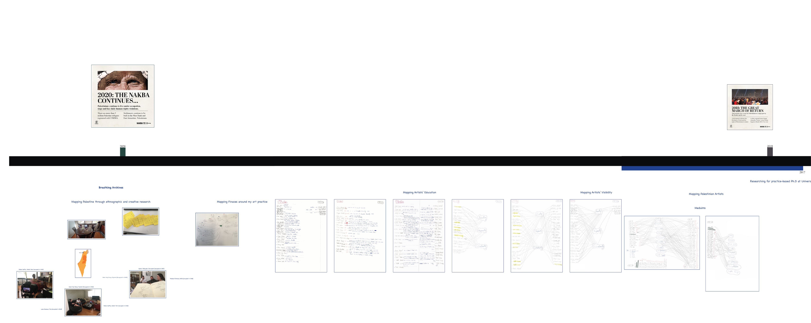
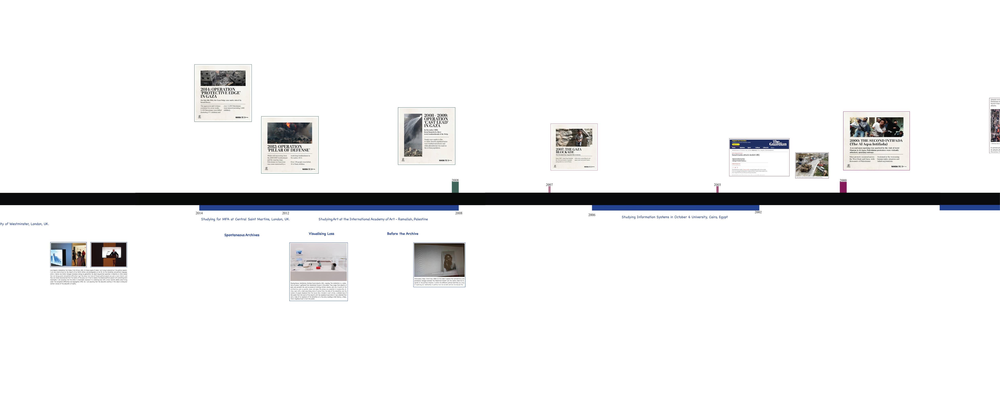
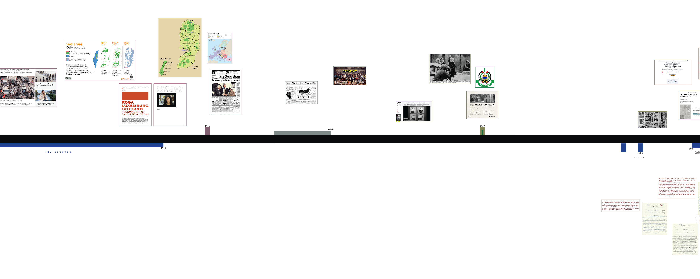
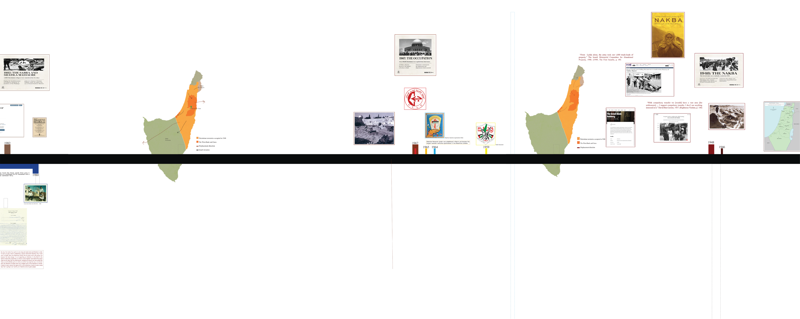

listen to lecture
drag and zoom to explore timeline




Bisan Abu-Eisheh (1985) is an artist and researcher based between Jerusalem and London. He holds a PhD from the university of Westminster, London. He is an M.A. Fine Art holder from Central Saint Martins, 2014. He has obtained his B.A. in contemporary visual art at the International Academy of Art – Palestine.
Abu Eisheh is using art as a tool to investigate history, society and politics. Working across media, such as video, installations and interventions, with a practice situated both within the gallery space and the public sphere, his work attempts to create a shared awareness for himself as well as his audience about several details lost within grand narratives. Researching through different resources, from conversation and oral testimonies to archives and collected objects he tries to challenge the aesthetics of his artworks in order to bring some facts under the eyes of his viewers. By doing so, his works often aspire to open a dialog and, perhaps, seek answers related to several topics such as national identity, mobility, migration and socio-political injustice.
Selected Group Exhibitions include: We Still Follow its Path, Palestinian Art Court (Al Hoash), Jerusalem (2022/21). I thought of Home online exhibition, Hangar, Lisbon, Portugal (2020).Clear-Hold-Build, 12 Gates Gallery, Philadelphia, USA (2019). Subcontracted Nations, Al Qattan Cultural Centre, Ramallah (2018). Jerusalem Lives, the Palestinian Museum, Berziet(2017). Don’t You Think It’s Time for Love?, Moscow Museum of Modern Art (MMoMA), Moscow, Russia (2016). The Jerusalem Show VIII: Before and After, Jerusalem, Palestine (2016). Glasgow International 2016, Bitter Rose project by Birthe Jorgensen and TawonaSithole, Glasgow, Scotland (2016). Eva International Biennial/Ireland’s Biennial, Limerick, Ireland (2014) and The 12th Istanbul Biennial (2011).
Abu Eisheh is using art as a tool to investigate history, society and politics. Working across media, such as video, installations and interventions, with a practice situated both within the gallery space and the public sphere, his work attempts to create a shared awareness for himself as well as his audience about several details lost within grand narratives. Researching through different resources, from conversation and oral testimonies to archives and collected objects he tries to challenge the aesthetics of his artworks in order to bring some facts under the eyes of his viewers. By doing so, his works often aspire to open a dialog and, perhaps, seek answers related to several topics such as national identity, mobility, migration and socio-political injustice.
Selected Group Exhibitions include: We Still Follow its Path, Palestinian Art Court (Al Hoash), Jerusalem (2022/21). I thought of Home online exhibition, Hangar, Lisbon, Portugal (2020).Clear-Hold-Build, 12 Gates Gallery, Philadelphia, USA (2019). Subcontracted Nations, Al Qattan Cultural Centre, Ramallah (2018). Jerusalem Lives, the Palestinian Museum, Berziet(2017). Don’t You Think It’s Time for Love?, Moscow Museum of Modern Art (MMoMA), Moscow, Russia (2016). The Jerusalem Show VIII: Before and After, Jerusalem, Palestine (2016). Glasgow International 2016, Bitter Rose project by Birthe Jorgensen and TawonaSithole, Glasgow, Scotland (2016). Eva International Biennial/Ireland’s Biennial, Limerick, Ireland (2014) and The 12th Istanbul Biennial (2011).